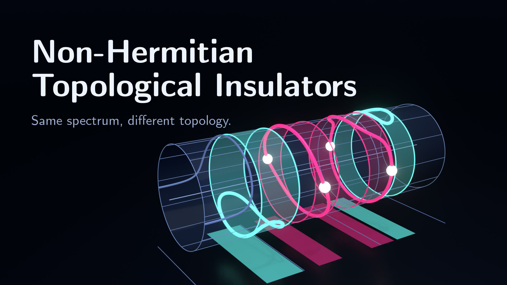
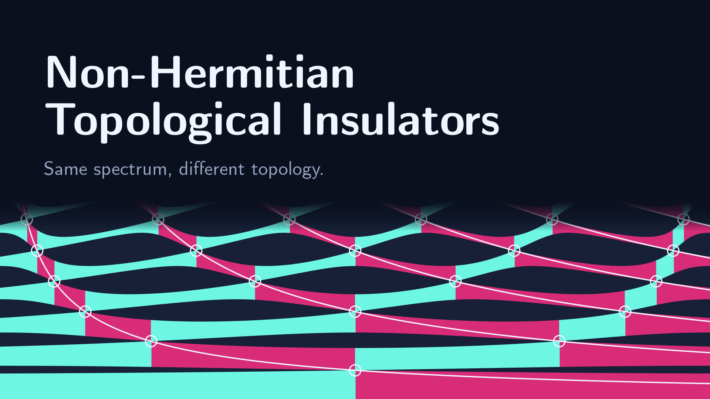

Topological Insulators
MSc thesis Non-Hermitian Topological Insulators, Laboratory of Wave Engineering, EPFL, 2021, supervised by Prof. Romain Fleury. Two films are in preparation; they come from a 2026 reproduction of its results: the original Mathematica code, ported to Python.
In short
A wave on a periodic chain either passes or is blocked, depending on its frequency: the spectrum splits into bands and gaps. Topology asks whether a band also carries a label that no smooth change of the chain can alter. The thesis defines such a label directly from the 2×2 transfer matrix of one cell, first for lossless, reciprocal systems (the group SU(1,1)), then for general 2×2 matrices.
Inside a band the eigenvectors of the transfer matrix are real. Followed across the band, they draw a closed loop on a cylinder, which either wraps the cylinder or can slide off it; only the lowest band, which starts at zero frequency, leaves its loop open. A label can switch only where two neighbouring bands touch and the gap between them closes. It can also be read off physically: a band is non-trivial when an odd number of frequencies inside it (its edges not counted) pass a single cell, set into a plain line, without reflection.
The example is a transmission line with two capacitors in every cell. Sliding the two capacitors within the cell closes and reopens gaps, and at each closing the two bands that touch swap their labels. Swapping the two spacings in the cell leaves the bands exactly where they are, yet flips their labels.
The films use ordinary capacitors. The thesis takes the opposite sign for their admittance, so its frequencies differ from those shown here; the topology is the same.


How to cite
The thesis itself is not published in a journal, an archive or on a website; this page is its address. BibTeX for the thesis. Clicking the block selects it, ready to copy.
@mastersthesis{Muller2021_non_hermitian_topological_insulators,
author = {M{\"u}ller, Jonas},
title = {Non-Hermitian Topological Insulators},
school = {{\'E}cole Polytechnique F{\'e}d{\'e}rale de Lausanne (EPFL)},
address = {Lausanne, Switzerland},
year = {2021},
note = {Unpublished MSc thesis, Laboratory of Wave Engineering,
supervised by Romain Fleury},
url = {https://jmullerresearch.ch/topological-insulators.html}
}